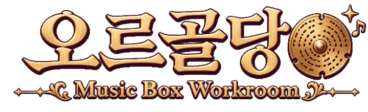
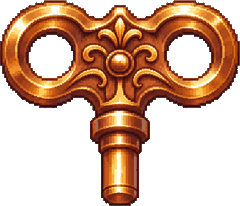
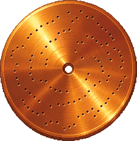
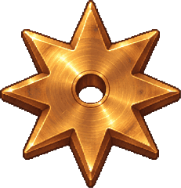
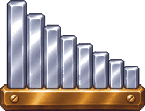

❦ 황동 원판에 음을 찍어 나만의 오르골 음악을 만들고, 친구와 함께 들어 봐요.

① 태엽 감기태엽을 감으면 원판이 천천히 돌아요.

② 원판의 돌기원판에 찍힌 돌기가 별바퀴를 톡 밀어요.

③ 별바퀴별바퀴가 돌면서 금속 빗살을 튕겨요.

④ 금속 빗살빗살이 떨리며 맑은 소리가 나요.
알고 있나요?빗살이 짧을수록 높은 소리가 나요. 그래서 오르골의 빗살은 길이가 모두 달라요.
오르골당에서 직접 해 보고, 알맞은 말에 ○ 하세요.
정답은 없어요. 마음에 떠오르는 음악을 자유롭게 골라 보세요. (여러 개 골라도 좋아요)
예) 눈 내리는 밤, 고양이가 꿈속에서 듣는 잔잔한 음악이에요.
내 음악과 어울리는 풍경을 액자 안에 꽉 채워 그려요. 이 액자는 오르골 뚜껑 속 풍경과 같은 모양(가로 8 : 세로 3)이에요.
오르골당에서 음악을 만들며 도전해 보세요. 성공하면 □에 ✓ 하세요.
마음에 드는 가락을 한 번 더 똑같이 찍어 보세요.
성공같은 방향 선 위에 두 음을 찍어 함께 울려 보세요.
성공아무 음도 찍지 않은 칸을 두어 잠깐 쉬어 보세요.
성공마지막 음을 '도'로 찍어 음악을 편안하게 마쳐 보세요.
성공되풀이하면 가락이 기억에 남고, 쉼은 음악이 숨을 쉬게 해 줘요. '도'로 끝나면 음악이 끝났다는 느낌이 들어요.
친구가 보내 준 링크를 열고 태엽을 감아 들어 보세요. 별에 색칠하고, 칭찬 한마디를 남겨요.
| 친구 이름 | 작품 제목 | 음악과 그림이 어울려요 | 칭찬 한마디 |
|---|---|---|---|
| ☆☆☆☆☆ | |||
| ☆☆☆☆☆ | |||
| ☆☆☆☆☆ |